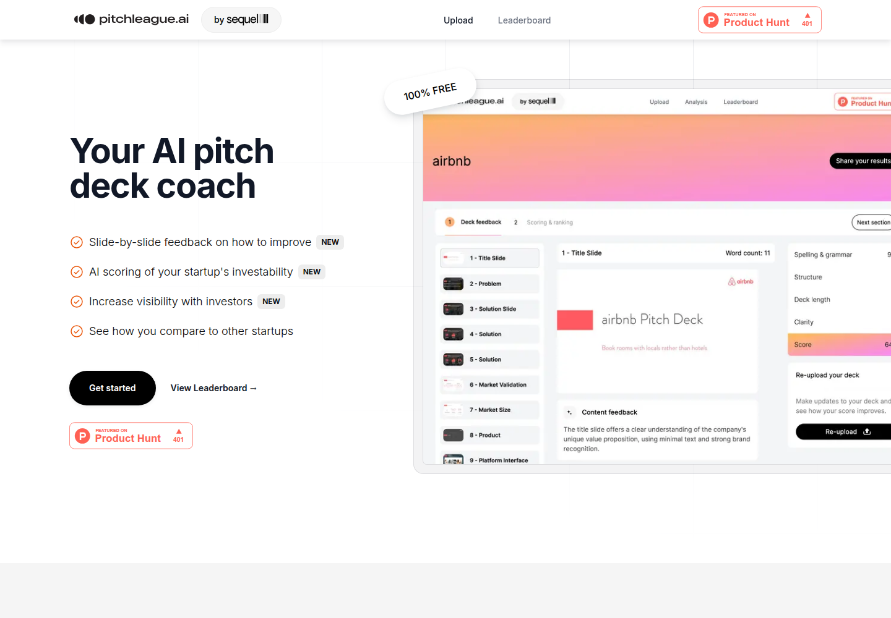
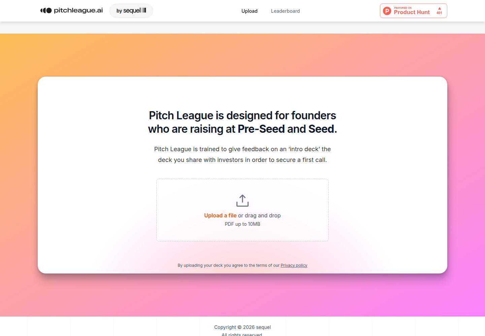

Profile
- Company
- PitchLeague
- Url
- https://www.pitchleague.ai/
- Source Category
- AI pitch-deck reviewers
- Research Status
- Deep Cited Research / Draft Complete
- Current Status
- live - fetched https://www.pitchleague.ai/ directly on 2026-07-19, HTTP 200, copyright footer '© 2026 sequel', confirming it is actively operated by parent company Sequel and was still active at time of research.
- Founded Launch Year
- PitchLeague AI launched in beta circa April 2023 (per the 'Founder Files' study covering pitch decks 'submitted via PitchLeague.ai between April 2023 and June 2025'), built by the team at Sequel (sequel.co) during an internal AI hackathon
- Company Age
- ~3 years (as of 2026, since April 2023 launch)
- Hq Country
- United States - Miami, Florida (HQ of parent company Sequel)
- Operating Area
- global - study covers startups from '121 countries'
- Target Users
- early-stage founders seeking free pitch deck feedback and benchmarking; secondary purpose is data collection for Sequel's own investment research/thesis-building
- Product Category
- AI pitch/deck review (free, gamified leaderboard); founder-investor / capital (parent company Sequel is itself an active startup investor)
Product Flows
- Swipe Card Interface
- not found / no evidence of swipe UI; product is an upload-and-score tool with a public leaderboard
- Mutual Match
- not found / no public source
- Ai Matching Scoring
- not found / no evidence of an automated investor-matching engine; instead, PitchLeague offers a 'leaderboard' for visibility to investors ('Increase visibility with investors')
- Ai Deck Scoring
- yes
- Founder To Founder Flow
- not found / no evidence
- Founder To Investor Flow
- yes - leaderboard/investor visibility
- Project Profiles
- yes
- Messaging Collaboration
- not found / no public source
- Mobile App
- not found / no App Store/Google Play listing located
- Web App
- yes
Security & Documents
- Nda Gated Unlock
- not found / no public source
- Data Room
- not found / no public source
- E Signature
- not found / no public source (original pass already marked not found, confirmed)
- Meeting Prep Ai Briefing
- not found / no public source
Pricing, Funding & Traction
- Pricing Model
- 100% free (explicitly stated on homepage: '100% Free')
- Business Model
- Free lead-generation / data-collection tool for parent company Sequel - likely monetized indirectly via deal sourcing for Sequel's investment activity and via the proprietary dataset (17,546 decks) used for published research ('The Founder Files') that builds Sequel's brand/authority
- Total Funding
- not found / no public source for PitchLeague specifically (it is a free internal product of Sequel, not a separately funded company); Sequel itself reportedly raised a Seed round per Crunchbase-derived search (amount undisclosed)
- Funding Rounds
- not found / no public source (Sequel Seed round amount undisclosed)
- Investors
- not found / no public source
- Funding Source Type
- Internal product of VC-style investment platform Sequel (co-founded/led by Alex Macdonald)
- Last Funding Date
- not found / no public source
- Users Traction
- 3,000+ founders using PitchLeague (homepage: 'Used by 3000+ founders'); underlying dataset covers 17,546 pitch decks from 121 countries (Apr 2023-Jun 2025) per 'The Founder Files' study
- Deals Funding Facilitated
- not found / no public source (no disclosed capital raised by leaderboard participants)
- Partnerships
- not found / no named third-party partnerships beyond being a Sequel product
- Media Coverage
- Product Hunt launch page (producthunt.com/products/pitchleague-ai); Alex's Newsletter (Substack) feature 'Pitch League AI: A Free Pitch Deck Coach'; 'The Founder Files' study self-published at founderfiles.sequel.co and referenced by openvc.app blog
- Product Update Activity
- active - homepage shows three features marked 'New' (AI scoring of investability, increase visibility with investors, compare to other startups), and the Founder Files study (published research through June 2025) indicates ongoing data collection and product investment into 2026
- Acquisition Rebrand History
- not found / no evidence of acquisition or rebrand; consistently branded as PitchLeague.ai under Sequel
Scores
- Product Overlap Score
- 3
- Feature Maturity Score
- 2
- Market Traction Score
- 2
- Funding Strength Score
- 2
- Ai Depth Score
- 2
- Nda Security Strength Score
- 1
- Network Moat Score
- 2
- Direct Threat Score
- 2.0
- Source Confidence
- Medium
Evidence Notes
- Primary Sources
- https://www.pitchleague.ai/
https://www.pitchleague.ai/leaderboard?page=3
https://founderfiles.sequel.co/
https://www.sequel.co/
https://www.sequel.co/founders - Secondary Sources
- https://alexfmac.substack.com/p/pitch-league-ai-a-free-pitch-deck-coach
https://www.producthunt.com/products/pitchleague-ai
https://www.openvc.app/blog/worlds-first-study-of-17500-startup-pitch-decks-by-sequel
https://www.crunchbase.com/person/alex-macdonald
https://www.crunchbase.com/organization/sequel-6707 - Unsupported Claims
- 'Used by 3000+ founders' is a homepage self-reported figure; the 17,546-deck dataset size is corroborated across two independent secondary sources (openvc.app and the self-published study), giving it higher confidence than most other batch figures.
- Contradictions
- None found; Sequel's identity as parent company is consistently confirmed via the site's own '© sequel' copyright footer and cross-referenced Crunchbase/Substack coverage.
- Last Checked
- 2026-07-19
- Notes
- PitchLeague is a free, gamified deck-scoring tool built by athlete-investing platform Sequel primarily as a deal-sourcing and research/data asset, not a standalone monetized product - it has no investor-matching, NDA, or messaging features and the lowest direct_threat_score in the batch. Its differentiator is the large proprietary research dataset (17,546 decks) rather than platform depth.
Registration Flow
Research date: 2026-07-19. Screenshots are sanitized public copies from the private registration-flow capture set; credentials, tokens, verification links/codes, browser chrome, and private identifiers are not intentionally published.
Outcome: stopped at required truthful-details / submission boundary.
Stop point: Untouched official Upload a file control at https://www.pitchleague.ai/#upload, before selecting or submitting any pitch deck, agreeing through upload to the Privacy Policy, receiving AI analysis/scoring, appearing on a leaderboard, increasing investor visibility, creating an account, verifying email, starting OAuth, choosing a plan, paying, completing KYC, making an investment, or undertaking any financial commitment
Blocker / boundary: PitchLeague exposes no preliminary account-registration form in the observed free-start flow. Its Get started action goes directly to a required PDF upload for an investor intro deck from founders raising at Pre-Seed or Seed. Uploading a pitch deck would constitute a fundraising submission and is an explicit stop condition, so no file was selected or submitted.
- Official public homepage and free-start entry. PitchLeague's official homepage presents a '100% FREE' AI pitch-deck coach with slide-by-slide feedback, startup investability scoring, investor visibility, and startup comparisons. The prominent Get started action is the entry to the public flow.
- Untouched mandatory pitch-deck upload and stop point. Get started moves to the homepage's upload section. PitchLeague states that the product is designed for founders raising at Pre-Seed and Seed and evaluates an investor intro deck. The required single-file control accepts one PDF up to 10MB, and uploading constitutes agreement to the Privacy Policy. The upload was left empty because submitting a fundraising pitch deck is an explicit task stop condition.

